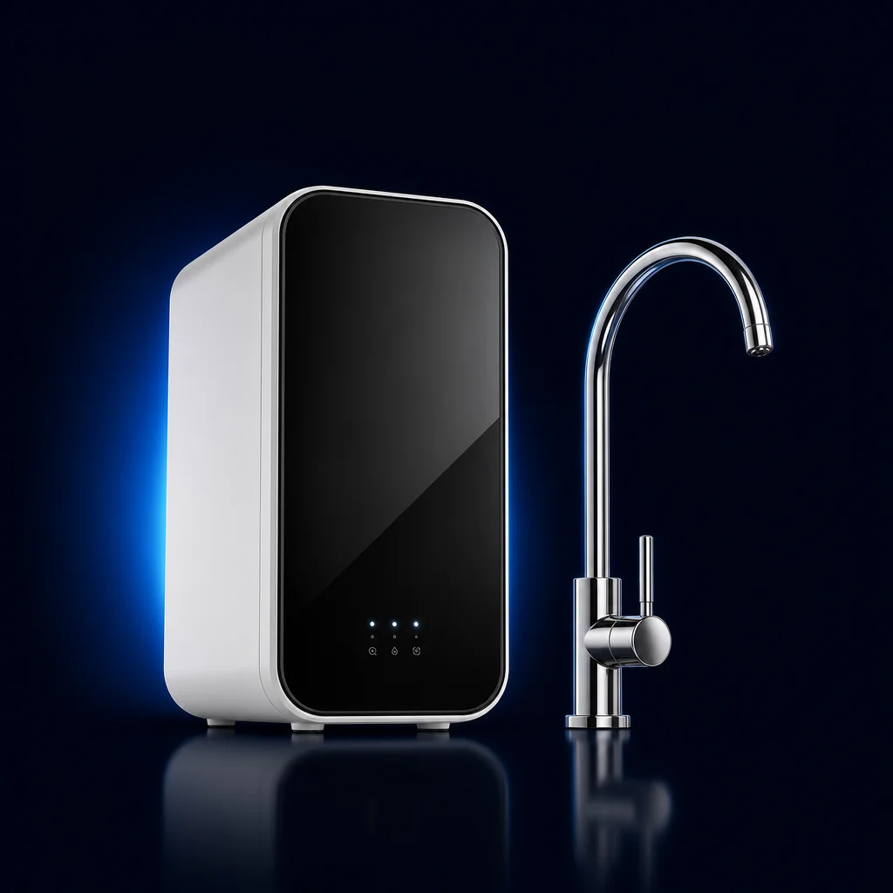

Drinking Water
Reverse Osmosis Systems for Twin Cities Homes
Reverse osmosis is a point-of-use treatment method that pushes water through a semipermeable membrane to produce a treated drinking-water stream at your kitchen sink. Both tank and tankless options are available and professionally installed — and included free with any whole-home system.
HW800 AlkaPro Tankless RO
$799
Included free with any whole-home system
Every component NSF certified
What It Does
Purified, alkaline drinking water on demand — straight from a dedicated faucet at your sink. No storage tank, 70% less under-sink space, and water treated the moment you ask for it.
How It Works
- 17-stage high-precision filtration with an ultra-fine 0.0001-micron spiral-flow RO membrane.
- 2Removes heavy metals, dissolved solids, chlorine, microplastics, PFAs and other everyday contaminants.
- 3Built-in alkaline remineralization adds beneficial minerals back for great taste and balanced pH.
- 4Auto RO flush keeps the membrane clean automatically — filters are DIY twist-and-swap.

1 of 2 — use arrows to explore
“They assessed our water, explained everything clearly, and recommended a system… Our water is incredible now.”
Sarah L. · Verified Customer
Why It Leads The Industry
Specs
| Filtration Stages | 7-Stage |
| Filtering Precision | 0.0001 micron |
| System Capacity | 800 GPD |
| Flow Rate | 0.53 GPM |
| Drain Ratio | 2:1 |
| Certification | NSF/372 |
Best Price Guarantee — We Beat Any Quote
Find a lower quote on comparable equipment and installation — we'll beat it. Guaranteed pricing gets priority booking.
Tankless RO System
$799
Compact under-sink design with no storage tank. Treats water on demand. Includes 7-stage filtration with alkaline remineralization stage.
Schedule Installation — $799Tank RO System
$799
Multi-stage filtration with pressurized storage tank. Purified water stored and delivered immediately when the faucet opens. 50 GPD production, 94-99% TDS rejection.
Schedule Installation — $799What Reverse Osmosis Does
Reverse osmosis pushes water through a semipermeable membrane under pressure. The membrane allows water molecules to pass while rejecting a broad range of dissolved contaminants. The treated water collects on the other side and is delivered to a dedicated drinking water faucet at the kitchen sink.
RO is a point-of-use treatment method — it treats water at one location for drinking and cooking purposes, not throughout the entire home. For whole-home treatment, RO is typically paired with a whole-home filtration or softening system.